Projeto autoral de rap, streetwear e eventos de Porto Alegre. +250 mil views por mês.
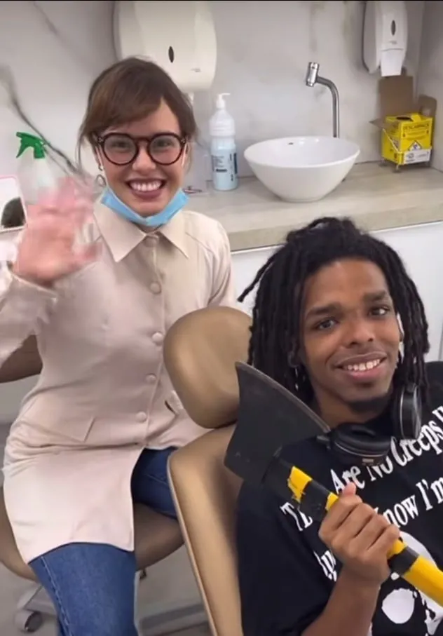
Criei a página do zero: nome, identidade, moldura dos posts, roteiro, motion e IA generativa nos reels. Tudo feito por mim, do conceito ao post agendado.
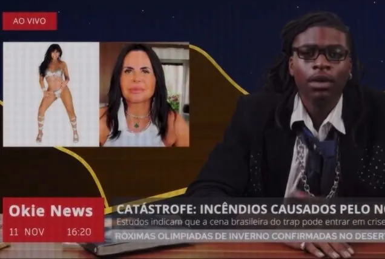
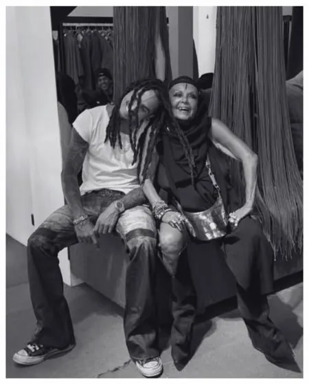
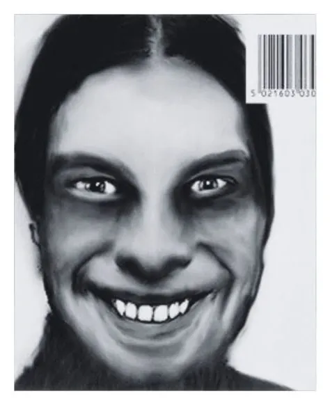
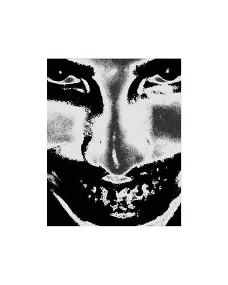
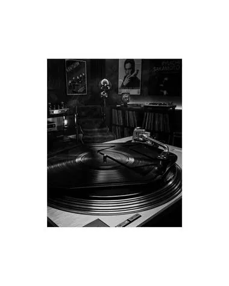
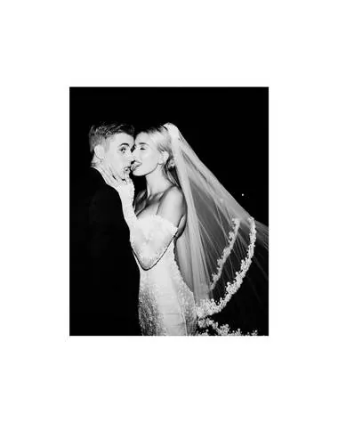
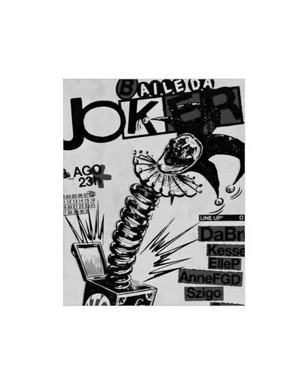
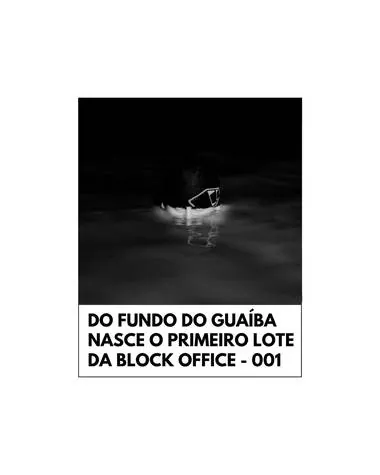
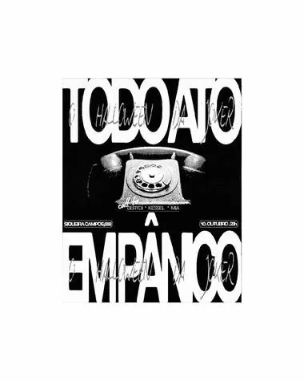
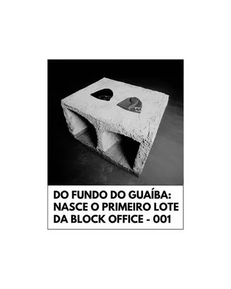
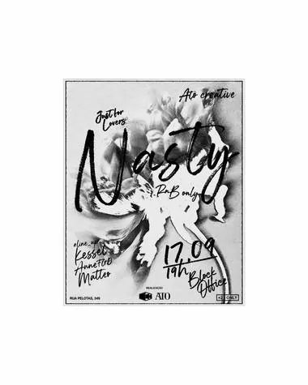
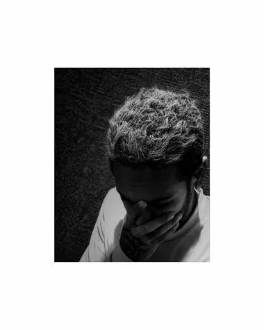
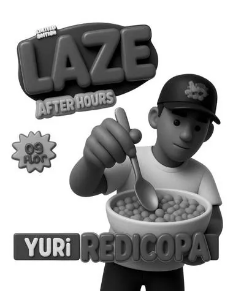
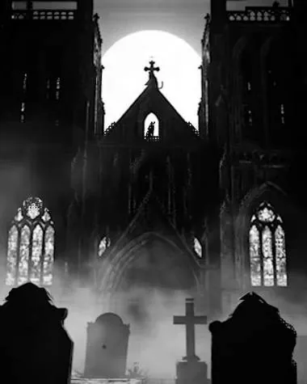
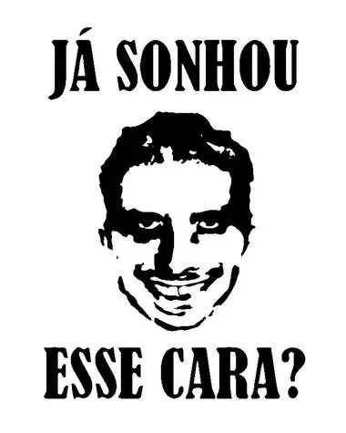
Antônio Meneghetti, designer e diretor de arte em Porto Alegre.
Portfólio completo e contato no meu perfil.